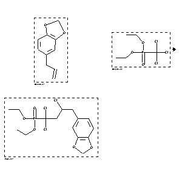

|  |
| FA | RX(1); FLST(1); RX(1) |
Reaction (1 of 1)
| Reaction ID | 1767836 |
| Reactant BRN | 136380; 1210640 |
| Reactant | 5-allyl-benzo[1,3]dioxole; trichloromethyl-phosphonic acid diethyl ester |
| Product BRN | 6820596 |
| Product | (4-benzo[1,3]dioxol-5-yl-1,1,3-trichloro-butyl)-phosphonic acid diethyl ester |
| No. of Reaction Details | 1 |
Reaction Details (1 of 1)
| Reaction Classification | Preparation |
| Yield | 45 percent (BRN=6820596) |
| Catalyst | electrolytic copper powder, 1,10-phenanthroline hydrat |
| Solvent | 1,2-dichloro-ethane |
| Temperature | 93 - 100 |
| Citation Pointer | 5893651; Journal; Villemin, Didier; Sauvaget, Frederique; Hajek, Milan; TELEAY; Tetrahedron Lett.; EN; 35; 21; 1994; 3537-3538; |
Reference (1 of 1)
| Citation Number | 5893651 |
| Document Type | Journal |
| Authors | Villemin, Didier; Sauvaget, Frederique; Hajek, Milan |
| CODEN | TELEAY |
| Journal Title | Tetrahedron Lett. |
| Language Code | EN |
| (Series) Volume | 35 |
| Number | 21 |
| Publication Year | 1994 |
| Page | 3537-3538 |